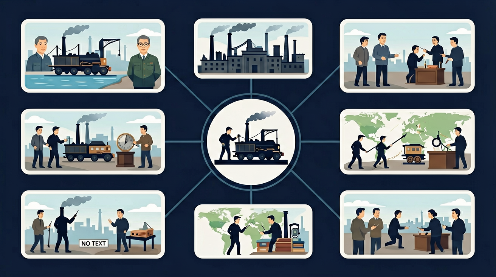

你知道手工业时代生产效率很低 · 但不清楚为什么 18 世纪英国率先改变了这一切 · 工业革命=机器大生产+蒸汽动力，彻底改变了人类社会的生产方式和社会结构
说出工业革命的主要发明及发明者
解释英国率先发生工业革命的原因
分析工业革命对社会结构的影响
工业革命首先从哪个行业开始？
已知：你知道手工业时代生产效率很低
问题：但不清楚为什么 18 世纪英国率先改变了这一切
解法：工业革命=机器大生产+蒸汽动力，彻底改变了人类社会的生产方式和社会结构
瓦特改良蒸汽机的最大意义是？
有疑问？点击提问！